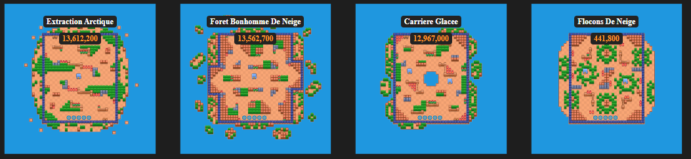
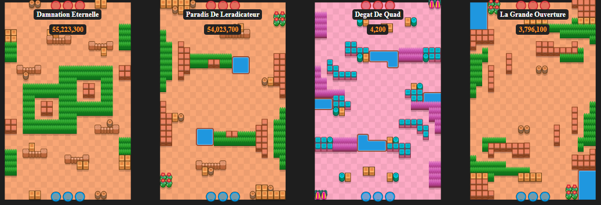

Il existe 15 modes de jeux différents ! Nous avons de quoi nous amuser.
Mais comment fonctionnent-ils ?
Razzia de gemmes : il oppose 2 équipes de 3 joueurs. Au milieu de la carte un puit de gemmes en laisse échapper. Le but ? Prendre 10 gemmes le plus vite possible. Quand une des deux équipes obtient 10 gemmes un compte à rebours se met en place. Si le compte à rebours tombe à 0, l'équipe qui a les 10 gemmes (ou plus) gagne. Le nombre de gemmes que vous, vos coéquipiers et les adversaires avez apparaît au-dessus des personnages. Si vous mourez, vous perdez toutes vos gemmes. Le compte à rebours s'annule si l'équipe adverse arrive à faire redescendre votre équipe en dessous de 10 gemmes ou inversement si c'est l'équipe adverse qui a les 10 gemmes. Le compte à rebours peut aussi s'annuler si une des équipes arrive à rattraper l'autre au même nombre de gemmes. Quand vous mourez, vous réapparaissez en bas de la map et les adversaires en haut de la map.
Le mode Razzia de gemmes peut aussi être joué en 5 contre 5 lors de certains événements. Il y a DEUX mines de gemmes sur la carte, et la première équipe à récupérer et à garder 20 gemmes gagne.
Brawl Ball : du foot en mieux ! C'est un match de foot où il faut marquer un but dans le camp adverse. Marquez deux buts avant l'équipe adverse pour gagner. La différence est que le match s'arrête directement si l'une des deux équipes marque 2 buts. S'il n'y a que 1-0 pour une équipe alors le match continue. Si le compte à rebours est à 0 alors l'équipe qui a marqué 1 but gagne mais si personne ne marque ou s'il y a 1-1 alors on passe en mode "prolongation". Pendant les prolongations, tous les murs (même ceux qui sont indestructibles) sont détruits. Les prolongations durent 2 min et si à la fin il y a égalité au niveau des scores alors personne ne gagne.
Le mode Brawl Ball peut être joué en 5 contre 5 lors de certains événements. Le terrain a pris un léger virage, de 90 degrés pour être exact. Le Brawl Ball en 5c5 se joue sur un terrain en mode paysage, et les buts sont devenus un peu plus larges.

Hors Jeu : Éliminez l'équipe adverse dans un combat en trois manches à élimination directe. Les brawlers vaincus restent hors-jeu jusqu'à la manche suivante. La carte se couvre petit à petit de brouillard empoisonné, alors attention à ne pas laisser le combat s'éterniser !


Le mode Hors Jeu 5 contre 5 fonctionne de la même manière. La seule différence est que quand un personnage meurt dans une équipe ses coéquipiers reçoivent un boost de PV et de dégâts.
Chasse ouverte : Récupérez des points en éliminant des ennemis dans ce mode 3 contre 3 ! La première équipe à atteindre 10 points gagne.

Le mode Chasse ouverte 5 contre 5 s'étend jusqu'à 20 éliminations pour gagner.
Le basket : Une course en 3c3 vers le filet ! Battez-vous pour récupérer le ballon et envoyez-le dans le panier de l'adversaire. Tout tir marqué depuis derrière la ligne vaut 3 points. Tout tir marqué depuis l'intérieur de la ligne vaut 2 points. Le match se termine lorsqu'une équipe marque 5 points ou que le temps est écoulé.
Duel : Dans cet événement intense en 1c1, les participants sélectionnent un trio de brawlers à utiliser. Après chaque round, le vainqueur conserve son brawler pour le tour suivant, tandis que le brawler du perdant est éliminé. Continuez la bataille jusqu'à ce que l'un des deux n'ait plus de brawler disponible.

Cambriolage : Combattez d'autres joueurs pour gagner des trophées et enfuyez-vous avec votre butin dès l'ouverture des portes de sortie. Les sorties s'ouvrent quand la moitié des joueurs ont été éliminés ou lorsque le compte à rebours final est lancé. Quelques robots porteurs de trophées se joindront aussi à la mêlée pour faire bonne mesure !

Prime : Gagnez des étoiles en éliminant des ennemis dans ce combat en 3 contre 3 ! Mais attention, plus vous avez d'étoiles, plus la prime sur votre tête augmente ! L'équipe qui atteint 20 étoiles en premier gagne. Si le combat se termine à égalité, l'étoile bleue sert à départager les deux équipes. Gardez-la de votre côté coûte que coûte !
Zone réservée : Combat 3 contre 3 au cours duquel vous devez occuper une ou plusieurs zones plus rapidement que vos adversaires pour l'emporter.
Braquage : Combat 3 contre 3 dans lequel vous devez détruire le coffre de vos adversaires avant qu'ils ne détruisent le vôtre. La partie se finit quand l'un des deux coffres est détruit ou quand le compte à rebours atteint 0. Dans ces cas-là c'est l'équipe qui est la plus proche de détruire le coffre adverse qui gagne.

Survivant Solo/ Duo : Ils ont tous les deux le même fonctionnement. Combat en solo ou avec un partenaire. Le dernier brawler (ou duo de brawlers) survivant dans l'arène l'emporte ! Vous pouvez trouver des boites qui en les cassant vous donne des gemmes vertes qui vous rendent plus fort. En survivant solo quand vous mourez c'est game over. Mais si vous mourez en duo survivant pas d'inquiétude ! Vous réapparaissez après 15 secondes tant que votre coéquipier est encore vivant.

Le mode Godzila est un mode de jeux temporaire : Détruisez la ville adverse. Vous pouvez trouver des pouvoirs qui vous transforment en Godzilla. L'équipe qui détruit la ville adverse de l'autre en premier gagne.